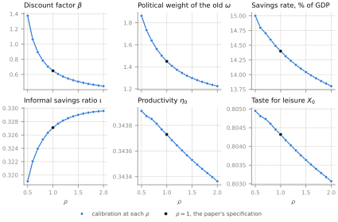

import {reformPaths, Inputs, readState, writeState} from "./assets/oa.js"
argPaths = FileAttachment("_generated/data/ARG_ReformPaths.csv").csv({typed: true})
viewof argRho = {
const i = Inputs.range([0.5, 2], {step: 0.1, value: +readState("rho", 1), label: "Intertemporal elasticity ρ"});
i.classList.add("oa-control");
i.addEventListener("input", () => writeState({rho: (+i.value).toFixed(1)}));
return i;
}
reformPaths(argPaths, Math.round(argRho * 10) / 10, {width})A2. The intertemporal elasticity of substitution
The paper’s benchmark is log preferences, and figure 5.2 reports the reform across the IES ρ. Each ρ is calibrated anew to the same targets, so a change of ρ moves the calibrated parameters as well as the curvature of utility. This page shows both.
Argentina’s calibration across the intertemporal elasticity
Four panels are parameters solved jointly with the equilibrium path at each ρ, and two are predictions of the calibration, the savings rate and the informal savings ratio in 2010. The discount factor and the political weight of the old both fall as the IES rises. The second falls because the young resist taxation less, so a lighter weight of the old reproduces the observed tax rate. At the lowest elasticities of the grid the thirty-year discount factor exceeds one. The savings rate falls with the IES and the informal savings ratio rises, while the informal productivity and taste for leisure barely move.
\(\cdot\)
Figure A2.1. The Argentine calibration across the intertemporal elasticity

Note: The parameters solved jointly with the equilibrium path at each \(\rho\) of the grid, against the same targets, and two predictions of the calibration, the savings rate and the informal savings ratio in 2010. \(\rho = 1\) is the paper’s calibration.
Data: informalSavings_rhoGridCommonX.csv ·
Source
Reads:
results/calibration/informalSavings_rhoGridCommonX.csv
Built by figuresOA.argRhoGrid (python/paper) at commit ea52b8e. Rebuild: .venv\Scripts\python.exe python\paper\build.py --only ARG_RhoGrid, then build.py --site.
Short- and long-run effects of the reform across the intertemporal elasticity
Figure 5.2 of the paper plots the reform’s effect in 2010 and in 2040 against ρ. The figure below shows, for the ρ chosen with the slider, the two paths behind those effects in levels, from the reform year to 2100. Every ρ starts from the same tax rate and workweek in 2010, which are a target and a normalization, but not from the same savings: the lower the IES, the more the pre-reform economy saves and the less its informal households save relative to formal ones. On both paths the tax rate rises over the first decades as the population ages. As ρ falls below one, the reform’s gap in the tax rate in 2010 shrinks and turns negative at the lowest ρ of the grid, before it opens up by 2040. Above one both paths shift down together as ρ rises, so the two points of the paper’s figure change little.
\(\cdot\)
Figure A2.2. The reform along the path at one intertemporal elasticity
\(\cdot\)
Note: Levels on the pre-reform path and on the reform path, each economy calibrated at its \(\rho\). The workweek is normalized so that the pre-reform path reads the observed average workweek in 2010. The changes printed under the panels are the two points of figure 5.2 of the paper at the chosen \(\rho\). The faint lines are \(\rho = 1\), the paper’s calibration.
Data: the figure’s data (csv) ·
Source
Reads:
results/calibration/informalSavings_rhoGridCommonX.csvresults/paper/calibrationSummary.csvresults/shocks/eeOnly_match_rho*_commonX.csv(16 files)results/shocks/universal_match_rho*_commonX.csv(16 files)
Built by siteData.argReformPaths (python/paper) at commit ea52b8e. Rebuild: .venv\Scripts\python.exe python\paper\build.py --only ARG_ReformPaths, then build.py --site.